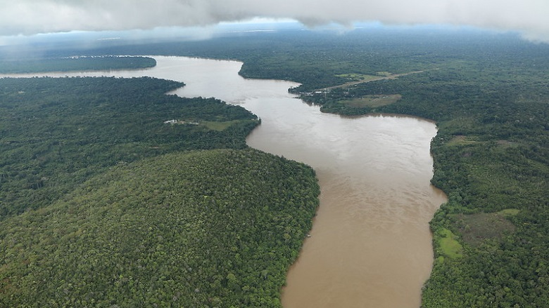
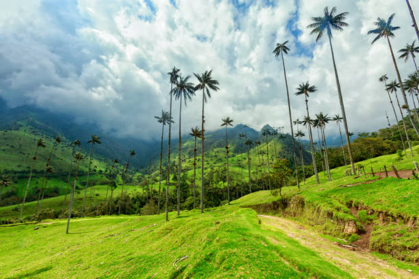
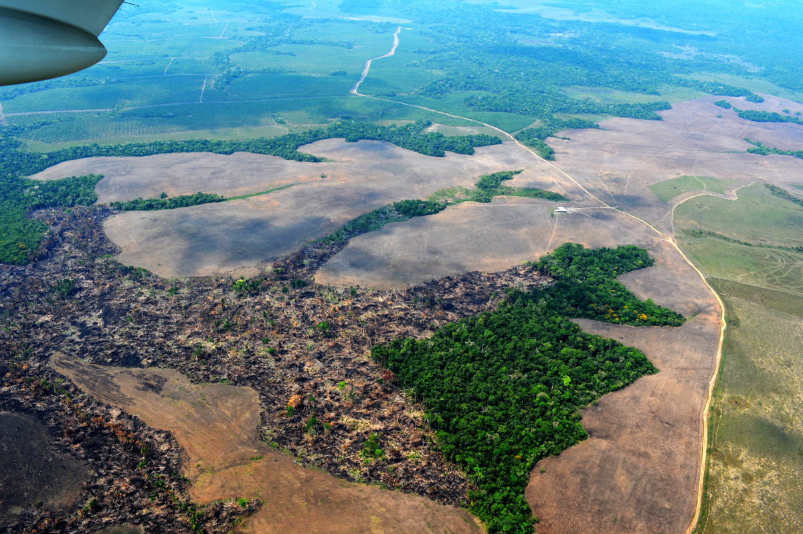

Nuestra Riqueza Viva
Colombia es el segundo país más biodiverso del mundo, albergando aproximadamente el 10% de la fauna y flora del planeta con récords mundiales en variedad de aves, anfibios y mariposas. Sin embargo, este paraíso vivo enfrenta graves amenazas como la deforestación y el tráfico ilegal, por lo que proteger nuestra fauna no es solo un deber ambiental, sino defender nuestra propia identidad y el futuro de ecosistemas únicos como la selva amazónica y los páramos andinos. Proteger nuestra fauna es proteger nuestra identidad.
El Agua: Fuente de Vida


Los páramos y ríos de Colombia son la verdadera sangre del país, actuando como fábricas naturales de agua que abastecen a millones de personas y sostienen ecosistemas únicos en el mundo. Sin embargo, la minería ilegal, la contaminación industrial y la crisis climática global amenazan gravemente estas fuentes hídricas vitales, recordándonos que sin una protección radical de nuestros recursos hídricos, simplemente no hay futuro posible para las próximas generaciones.
El Costo del Extractivismo

La ambición por unos barriles de petróleo está destruyendo lo que tardó siglos en formarse. La ambición desmedida por la extracción de petróleo y minerales está devorando la riqueza natural de Colombia a un ritmo alarmante, acelerando la deforestación y destruyendo en pocos días ecosistemas que tardaron siglos en formarse. Este modelo extractivista no solo contamina las fuentes de agua y fractura las comunidades locales, sino que hipoteca el futuro ambiental del país a cambio de ganancias económicas temporales y superficiales.
Minijuego: ¡Protege al Arbolito!
Toca la pantalla y mueve el dedo para esquivar la contaminación y ayudar al árbol a crecer fuerte.
¿Cómo ser parte del cambio?
Únete a la Comunidad
Crea tu cuenta o inicia sesión para acceder a las próximas secciones de la plataforma.
Apoya este Proyecto
Este sitio web es totalmente independiente y busca fomentar la reflexión crítica sin censura. Si valoras este espacio y quieres apoyar su mantenimiento y crecimiento, puedes hacer un aporte voluntario.